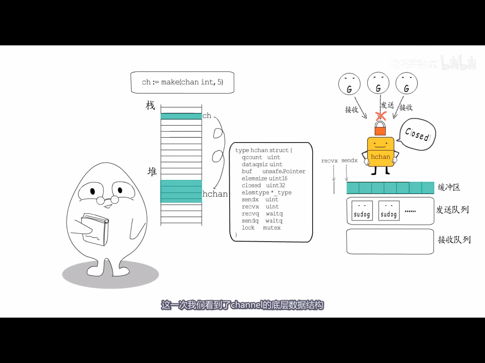
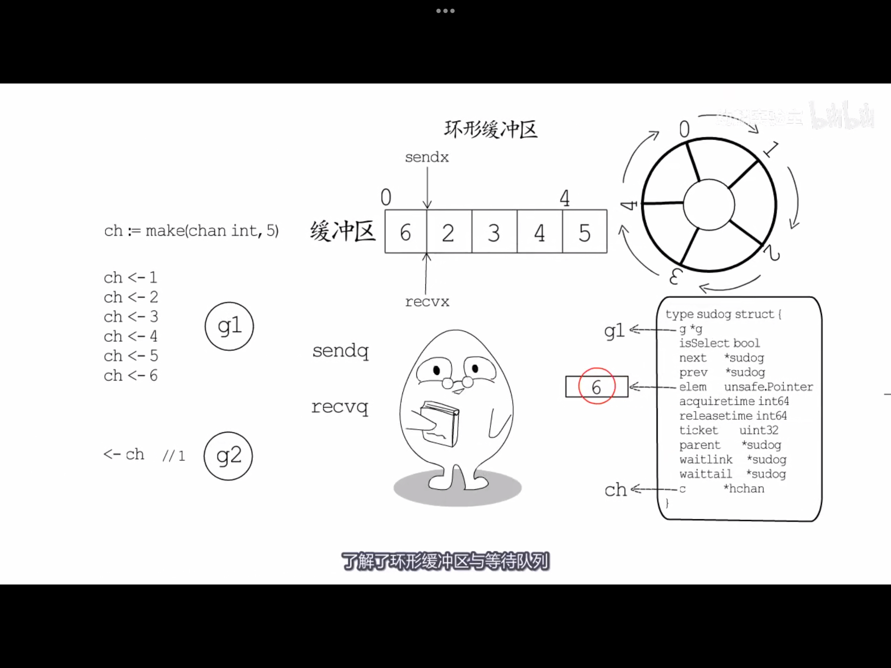
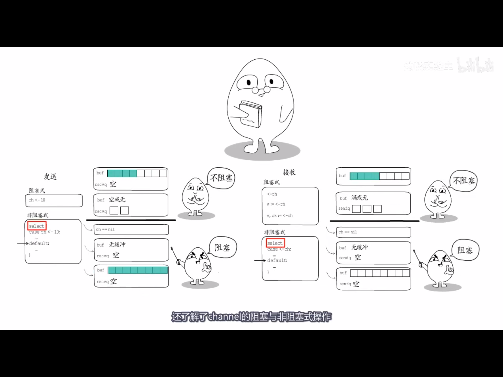
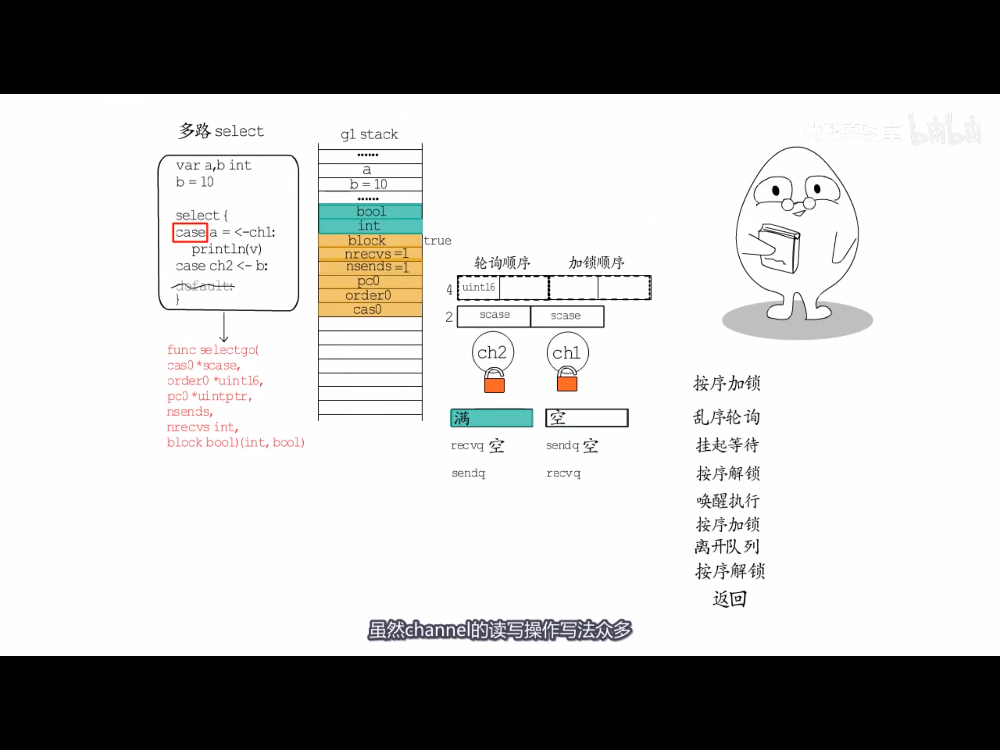

Channel的底层结构
channel在runtime里的结构
chan 在go源码的对应runtime包底下的hchan结构
type hchan struct {
qcount uint // 环形缓冲区里总共有多少元素
dataqsiz uint // 环形缓冲区的大小
buf unsafe.Pointer // 指向缓冲区元素的指针
elemsize uint16 // 缓冲区内元素的大小
closed uint32 // channel是否关闭
elemtype *_type // 缓冲区里元素的实际类型
sendx uint // 发送指针下标
recvx uint // 接收指针下标
recvq waitq // 接收协程队列
sendq waitq // 发送协程队列
lock mutex // 处理多协程访问的锁
}
type waitq struct {
first *sudog
last *sudog
}
type sudog struct {
g *g // 哪个协程在等待
next *sudog
prev *sudog
elem unsafe.Pointer // 等待要发送的数据在哪
// The following fields are never accessed concurrently.
// For channels, waitlink is only accessed by g.
// For semaphores, all fields (including the ones above)
// are only accessed when holding a semaRoot lock.
acquiretime int64
releasetime int64
ticket uint32
// isSelect indicates g is participating in a select, so
// g.selectDone must be CAS'd to win the wake-up race.
isSelect bool
// success indicates whether communication over channel c
// succeeded. It is true if the goroutine was awoken because a
// value was delivered over channel c, and false if awoken
// because c was closed.
success bool
parent *sudog // semaRoot binary tree
waitlink *sudog // g.waiting list or semaRoot
waittail *sudog // semaRoot
c *hchan // 等待哪个chaneel
}
当执行select时，runtime做了什么
当执行以下写法时
select {
case <-ch:
...
default:
...
}
select实际上会被编译器转化为runtime.selectgo的调用
func selectgo(
cas0 *byte,
order0 *byte,
pc0 *uintptr,
nsends int,
nrecvs int,
block bool,
) (int, bool)
参数依次如下：
-
cas0指向一个数组，数组里装的是所有select所有case的分支，顺序是send在前，recv在后 -
order0实际上也是一个数组，数组大小是第一个参数的两倍，实际被用作两个数组，第一个数组用来对所有的channel的轮询进行乱序, 第二个数组用来对所有channel的加锁操作进行排序；轮询需要乱序才能保障公平性，确定加锁顺序是防止死锁 -
pc0和race检测相关 -
nsends执行send的分支有多少个，nrecvs执行接收的分支有多少个 -
block是否会阻塞，有default的分支的不会被阻塞，没有的会被阻塞
返回值如下：
-
第一个int表示哪个case被最终执行来，进入default则是-1
-
第二个参数表示是实际接收到了这个值，还是因为channel关闭而得到了零值
channel的常见操作及对应的runtime调用
ch := make(chan byte, 1)
func makechan(chanType *byte, size int) (hchan chan any)
<-ch
func chanrecv1(hchan <-chan any, elem *any)
func chanrecv2(hchan <-chan any, elem *any) bool
ch <- 'x'
func chansend1(hchan chan<- any, elem *any)
close(ch)
func closechan(hchan any)
参考
   